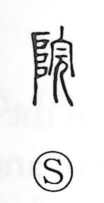

院

Uncategorized
Kun: | On: in
courtyard ・ institution ・ compound
Explanation
A phono-semantic graph, 院 takes 完 as its phonetic element, signaling the on reading, and early materials even wrote the word with 寃. Its core sense lies in 垣—an enclosing fence or hedge—so 院 depicts a building set within a fenced perimeter, and by extension the grounds or garden belonging to it. From this image of an enclosed residence grew specialized uses such as 書院, the scholar’s study or house, and 僧院, a monks’ dwelling, which in turn gave rise to the broader modern sense of an organized institution.